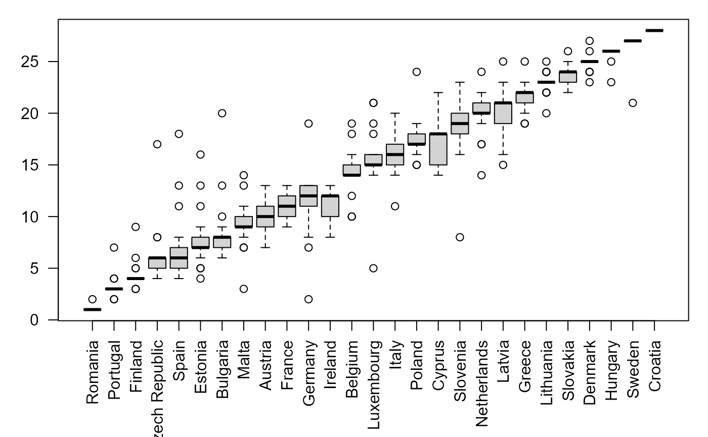
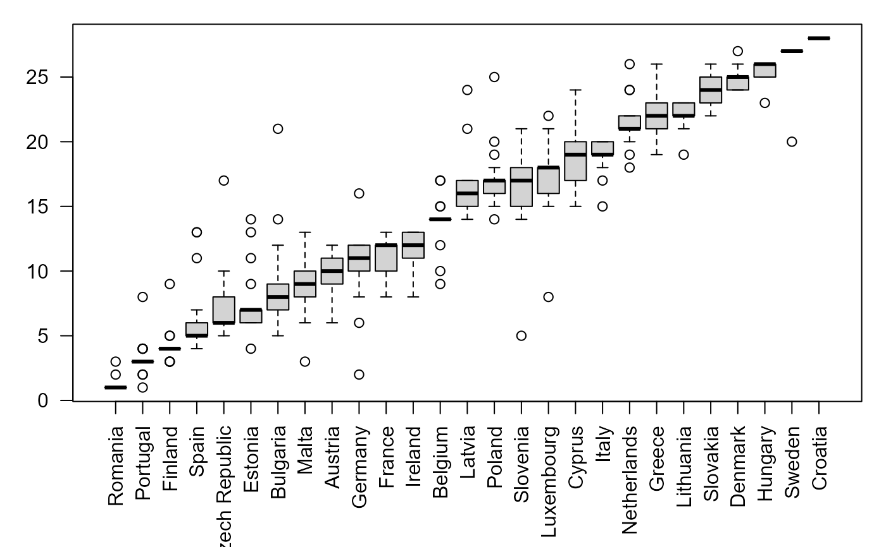
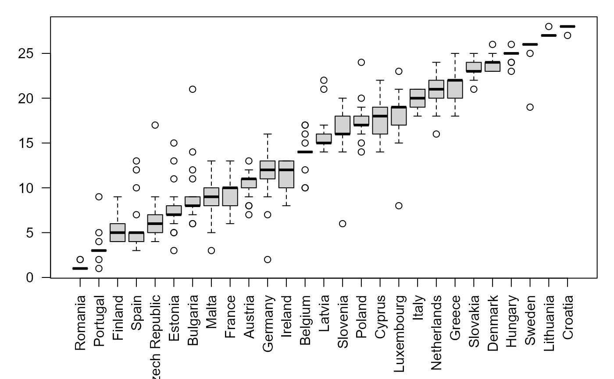
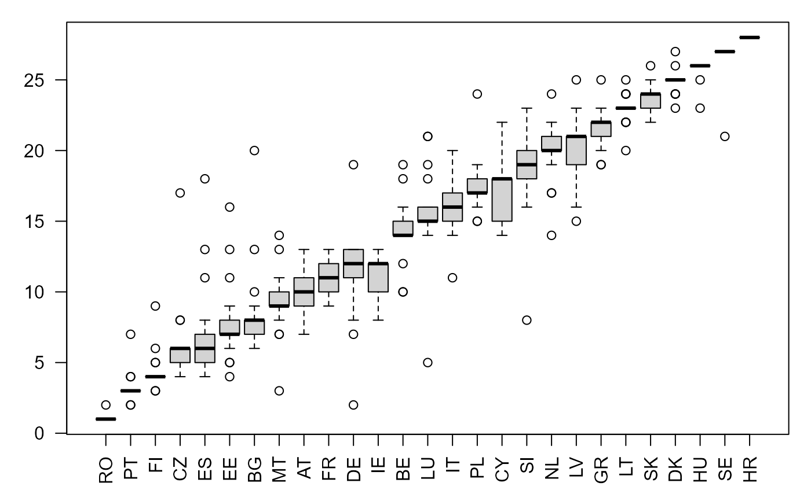
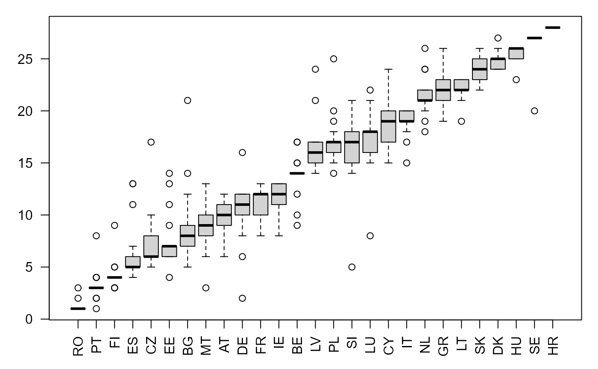
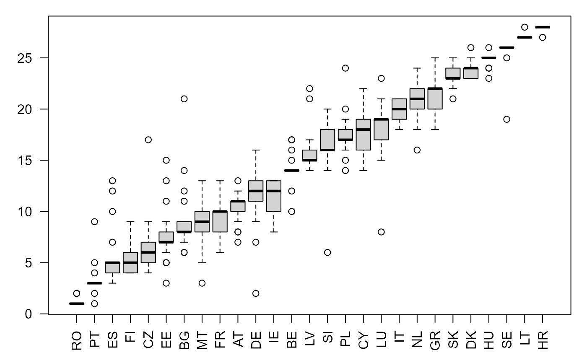

boxplotRanks.RdCreates a boxplot of ranks from simulations.
A list containing one or multiple dataframes (one for each year) with the ranks (scores) for different simulations. The dataframes inside the list have to look like the ones returned by linearAggExc(): Column 1 - statistical units (countries, regions, companies etc.). Column 2 - time (year, or month, or day etc. - numeric). Rest of columns - ranks (scores) in simulations.
Specifies the path to the folder where the returned .png file is saved.
Use in case the statistical units have a longer name in the dataframe and the user wishes to change it in the graph. Character vector specifying the full name of the statistical units.
Use in case the statistical units have a longer name in the dataframe and the user wishes to change it in the graph. Character vector specifying the new name given to the statistical units.
A boxplot per year. If path is specified, it also writes the boxplots as .png files in the path folder.
names(ranks2001_2003)
#> [1] "ranks2001" "ranks2002" "ranks2003"
boxplotRanks(ranks2001_2003)
#> Loading required package: plyr
#> Loading required package: gsubfn
#> Loading required package: proto



#if we want to use country codes instead, we could:
countryFullName=c("Belgium", "Bulgaria", "Czech Republic", "Denmark", "Germany", "Estonia", "Ireland", "Greece",
"Spain", "France", "Croatia", "Italy", "Cyprus", "Latvia", "Lithuania", "Luxembourg", "Hungary",
"Malta", "Netherlands", "Austria", "Poland", "Portugal", "Romania", "Slovenia", "Slovakia",
"Finland", "Sweden", "United Kingdom")
countryID=c("BE", "BG", "CZ", "DK", "DE", "EE", "IE", "GR", "ES", "FR", "HR", "IT", "CY", "LV", "LT", "LU", "HU",
"MT", "NL", "AT", "PL", "PT", "RO", "SI", "SK", "FI", "SE", "UK")
boxplotRanks(ranks2001_2003, statUnitsFullName=countryFullName, statUnitsIDs=countryID)



#below we create 3 boxplots and store them in the path folder: 2001.png, 2002.png, and 2003.png
#boxplotRanks(ranks2001_2003, path="E:/Sample folder", statUnitsFullName=countryFullName, statUnitsIDs=countryID)